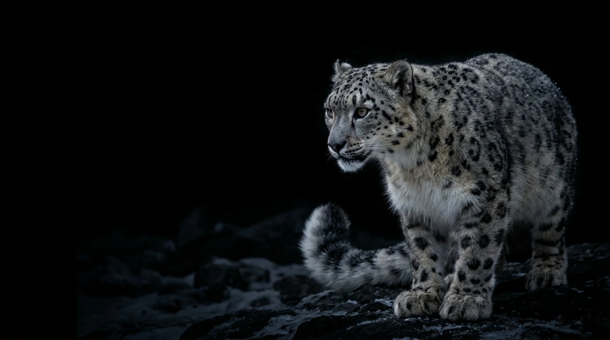

Verify Taxonomic Identity
Anchor every animal record to a validated non-avian species profile with scientific nomenclature, habitat baselines, and biometric or tag identifiers.
Panthera uncia
An elusive apex predator inhabiting rugged alpine and subalpine crags across 12 Central Asian nations, adapted to freezing mountain heights with dense smoky-gray rosetted fur, broad snowshoe paws, and a long heavy balancing tail.

“Discover, understand, and care for the animal kingdom through one intelligent lifecycle platform — from wildlife and marine life to livestock and companion animals.”
ANIVERA connects verified taxonomic reference profiles with longitudinal individual animal care records across four operational stages.
Anchor every animal record to a validated non-avian species profile with scientific nomenclature, habitat baselines, and biometric or tag identifiers.
Maintain chronological veterinary exams, immunizations, water or enclosure parameters, diagnostics, and treatment protocols in one structured ledger.
Schedule species-appropriate nutrition rations, habitat maintenance, enrichment, and preventive tasks with due dates and completion tracking.
Document every developmental transition—from birth, hatching, or metamorphosis through juvenile growth, adult care, and senior management.
From conservation biologists tracking wild megafauna to agricultural managers, marine sanctuaries, herpetologists, and companion caretakers.
Standardized identity records adapt to the identification method appropriate for each taxonomic group:
Capture species-relevant clinical observations without forcing disparate animals into a single rigid clinic template:
Translate biological requirements into daily, weekly, and seasonal care tasks with status tracking and due dates:
Monitor critical biological transitions tailored to each animal's life history strategy:
Select any category below to filter the 142-species ANIVERA catalogue. All avian records are excluded and managed separately in WINGLY.
Search and inspect all 142 validated species across the Left (Wildlife) and Right (Livestock, Companion, Marine, Fish, Reptiles, Amphibians, Invertebrates) galleries. Species with locally bundled verified photographs (28) are badged; remaining catalogue records use ANIVERA's honest taxonomic plate without cross-species photo substitution.
Showing 28 of 142 species
Every feature listed below is implemented, interactive, and verified in this application.
Two hardware-accelerated 3D cylindrical galleries rotating in opposite directions via delta-time requestAnimationFrame loops. Hovering never stops rotation; clicking a card pauses only that carousel while opening the species dialog.
Automated integrity checks enforce unique species IDs, unique common and scientific names, complete habitat/diet/lifespan/lifecycle metadata, 28 verified species photographs, and strict exclusion of avian species.
Create, view, edit, search, and filter individual animal profiles, log clinical health records with treatment notes, manage care tasks with status & due dates, and record chronological lifecycle milestones.
Zero cross-species photo misrepresentation. If an external image fails to load or is unbundled offline, ANIVERA automatically renders a clean taxonomic fallback plate rather than a broken icon or unrelated animal.
Full keyboard navigation, ARIA dialog semantics with focus trapping and focus restoration, high-contrast typography, and one-click or OS-level prefers-reduced-motion static grid mode.
Configured for Supabase project qbwulpofftxfddlykcxg with 5 relational tables, full authentication lifecycle, owner-scoped Row-Level Security isolation, and honest offline persistence.
Manage owner-scoped animal profiles, clinical health records, care tasks, and chronological lifecycle milestones. Send any species directly from the 3D carousels or Animal Explorer into your workspace.
Configured for ANIVERA's dedicated Supabase project with zero hardcoded service-role secrets and strict owner-scoped Row-Level Security (auth.uid() = owner_id).
qbwulpofftxfddlykcxghttps://qbwulpofftxfddlykcxg.supabase.coanimal_profiles, health_records, care_tasks, lifecycle_events, workspace_snapshots.Executes the 10-step persistence and authorization workflow (sign-in, profile create, reload persistence, profile edit, health/task linkage, and cross-user RLS access denial).
ANIVERA is engineered as a universal animal lifecycle management platform uniting taxonomic accuracy with day-to-day health, care, and milestone tracking across terrestrial wildlife, farm livestock, companion animals, marine mammals, fish, reptiles, amphibians, and invertebrates.
Clear Product Boundary: ANIVERA is neither a cattle-only nor a pet-only tool. All non-avian animal groups are supported here, while avian species (birds) are dedicated to the separate WINGLY platform.
Aves across both catalogue and workspace forms.#FB8122), Charcoal (#1D2228), White (#FFFFFF), and Silver Gray (#E1E2E2).Explore the 142-species non-avian catalogue or open the ANIVERA Lifecycle Workspace to manage animal identities, health histories, care routines, and developmental milestones.